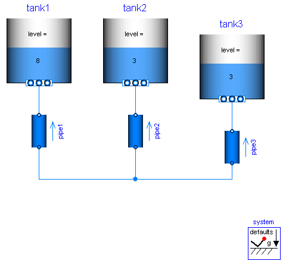
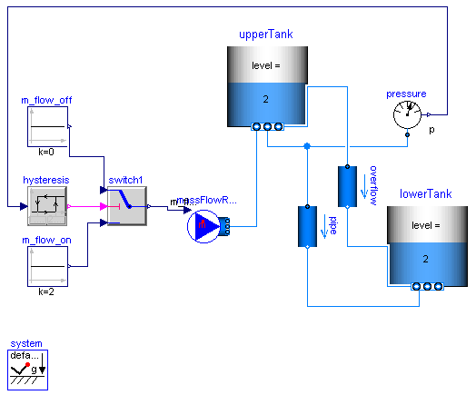
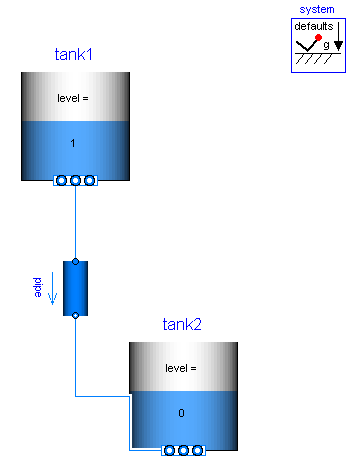

| Name | Description |
|---|---|
| Demonstrating the usage of SimpleTank | |
| Two tanks connected with pipes at different heights | |
| Show the treatment of empty tanks |
 Modelica_Fluid.Examples.Tanks.ThreeTanks
Modelica_Fluid.Examples.Tanks.ThreeTanks

Extends from Modelica.Icons.Example (Icon for an example model).
Modelica_Fluid.Examples.Tanks.TanksWithOverflow
The mass flow rate to the upper tank is controlled by the static pressure at its bottom. The fluid flows through a pipe and forced by different heights from the upper tank to the lower tank.
Additional fluid flows through an overflow pipe if the level of the upper tank exceeds 10m. Initially the overflow enters the lower tank above its fluid level; later on the fluid level exceeds the overflow port.
Note that the number of solver intervals has been increased, accounting for the long simulation time horizon. Otherwise the simulation may fail due to too large steps subject to events. Alternatively the simulation accuracy could be increased in order to avoid errors.

Extends from Modelica.Icons.Example (Icon for an example model).
Modelica_Fluid.Examples.Tanks.EmptyTanks

Extends from Modelica.Icons.Example (Icon for an example model). HTML-documentation generated by Dymola Wed Feb 04 15:31:24 2009.